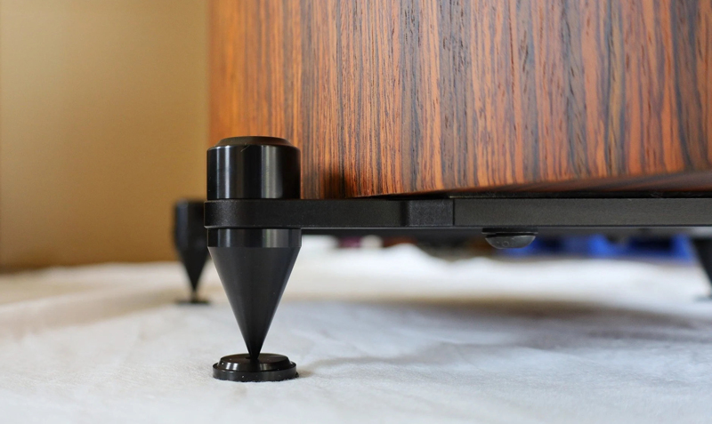
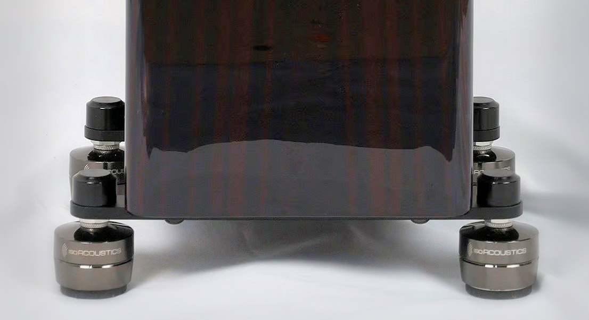

Accessories
Owners and new purchasers of either the BMR Tower or the HT Tower can now order custom 8mm aluminum outriggers with eight height adjustable spikes. The price for two sets (four bars and eight spikes — enough for one pair of speakers) is $120. The outriggers will be available for delivery in early August.

The outriggers can be upgraded with the IsoAcoustics Gaia II isolation system at a price of $300 for a set of 8. That's one-half of the retail price. This special pricing is available to new tower purchasers only. Existing tower owners who are interested in the Gaia system should order through third-party retailers. (We offer the Gaia II as a service to our clients. We have not tested the effectiveness of these devices.)

To order, just write Dennis at info@philharmonicaudio.com.